Coleção de Criações
Arte, vídeo, áudio e foto. É o que faço quando o problema não é de software, e está aqui porque é a mesma disciplina em outro material.
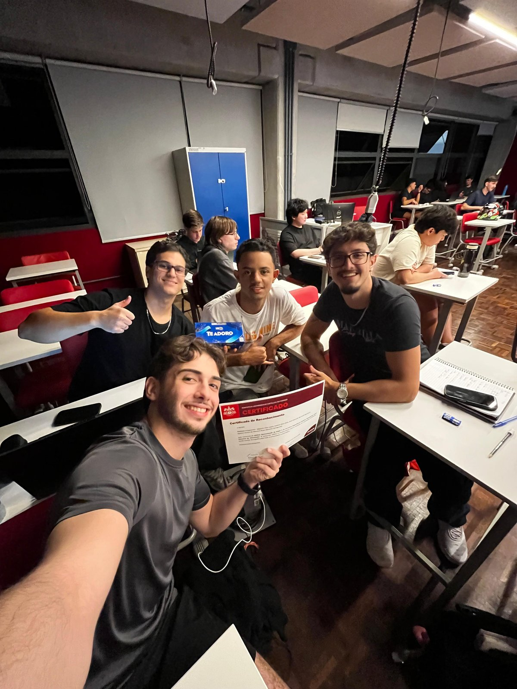
Prêmio de Melhor Apresentação
Quando eu e meus amigos ganhamos esse prêmio na disciplina de Experiência Criativa.
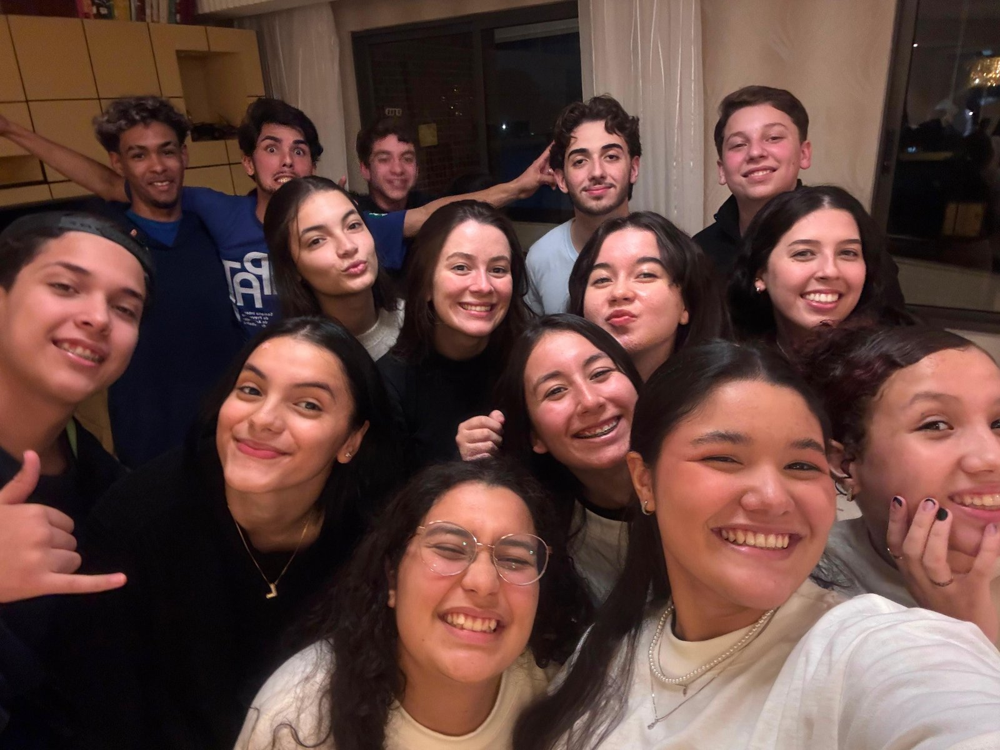
Meu Último GCEM em Paranaguá
Dias antes de me mudar para Curitiba.
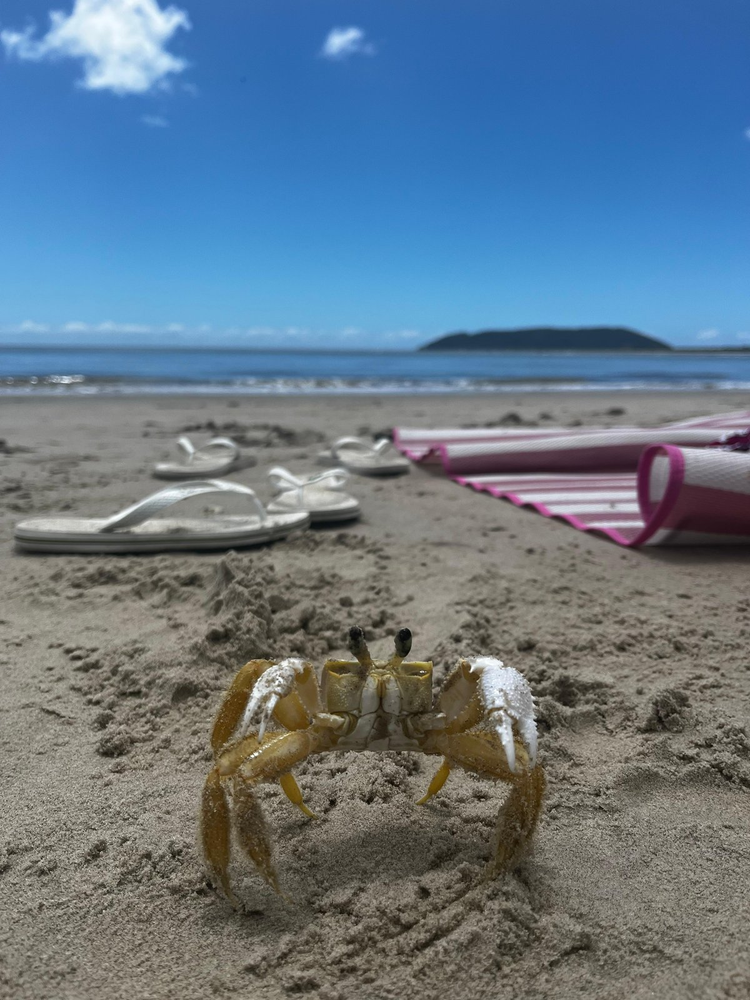
Viagem para Itapoá
Praia mais linda que eu já vi.
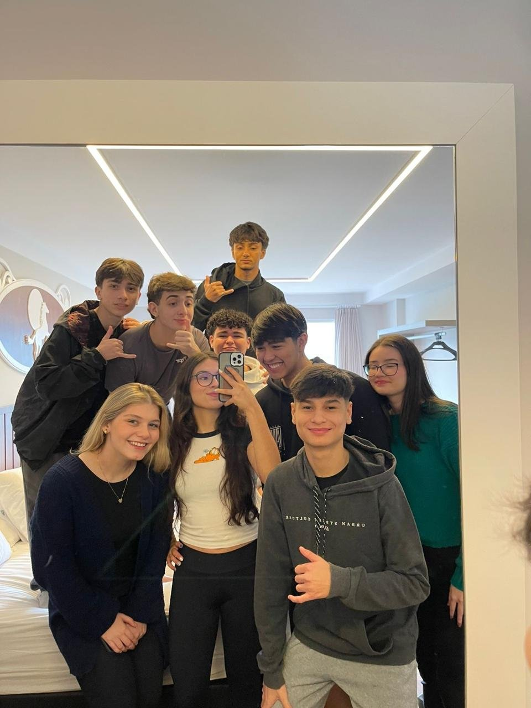
Com os Amigos em Gaspar
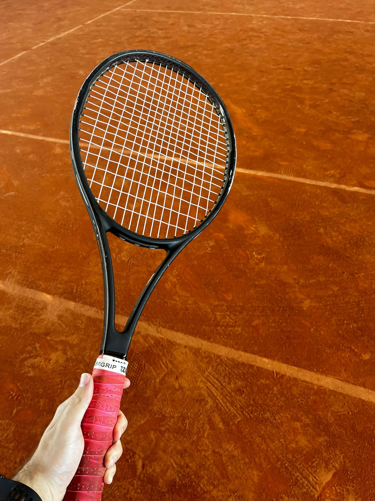
Primeira Vez Jogando Tênis
Horas de pesquisa apenas para aprender a jogar.
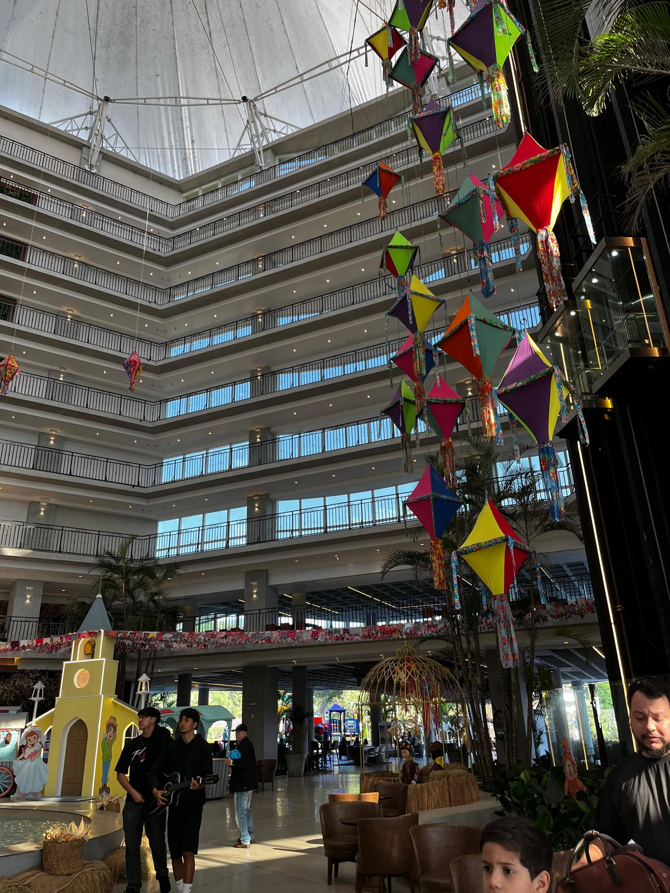
Viagem de Formatura para Gaspar
Nunca comi tão bem.
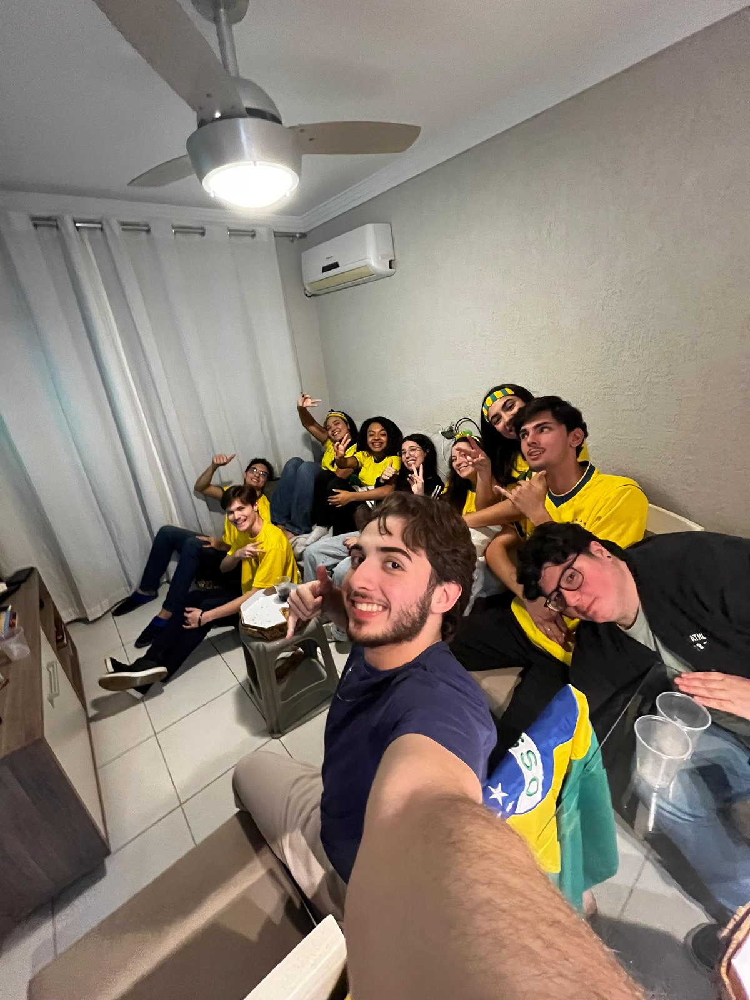
Jogo do Brasil
Nunca fui tão iludido.
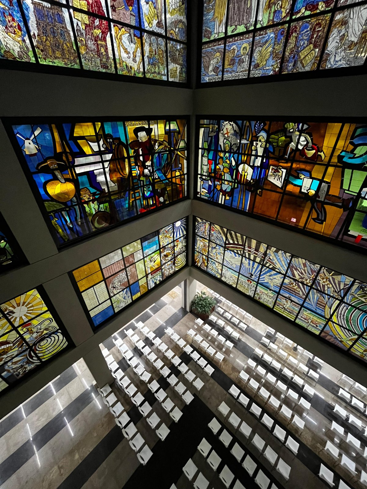
Primeira Vez Entrando na Biblioteca da PUC
Esses detalhes de vidro são incríveis.
Solo da Música: Colossenses e Suas Linhas de Amor
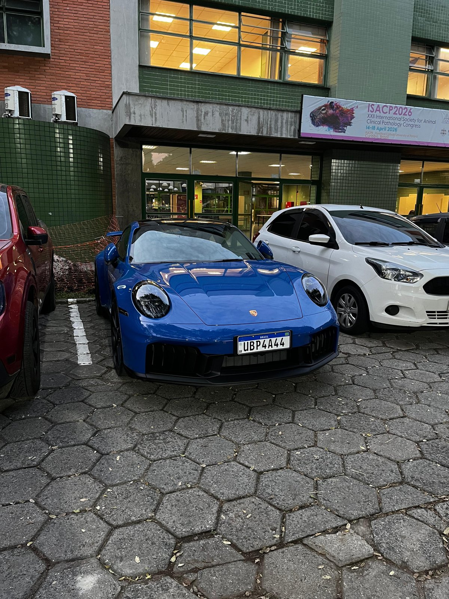
Mais Uma Porsche
Eu tenho um pequeno hiperfoco em Porsches.
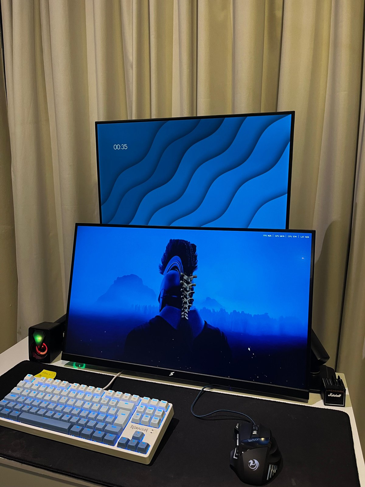
Meu Setup de Trabalho
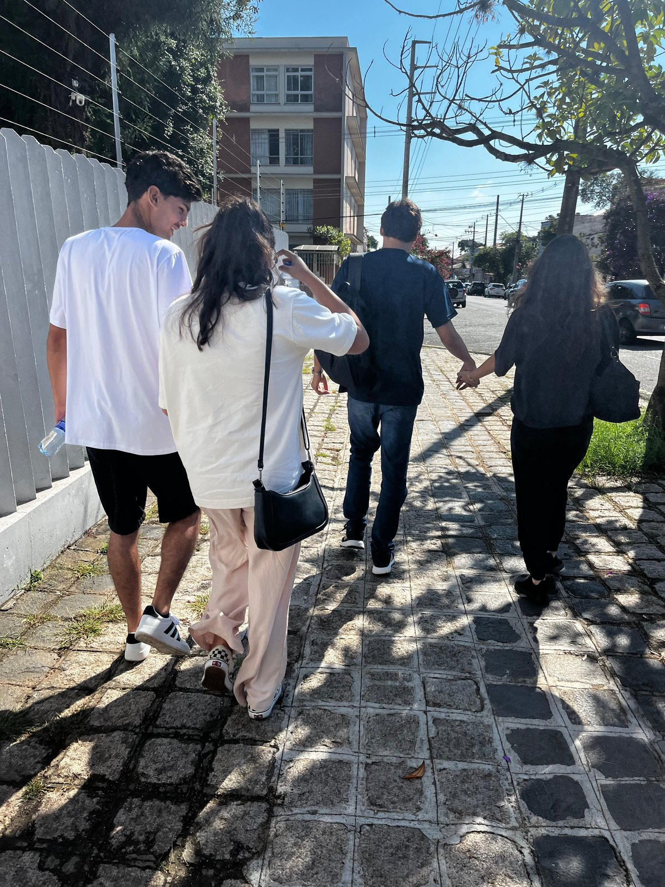
The Send 2026, com os Amigos
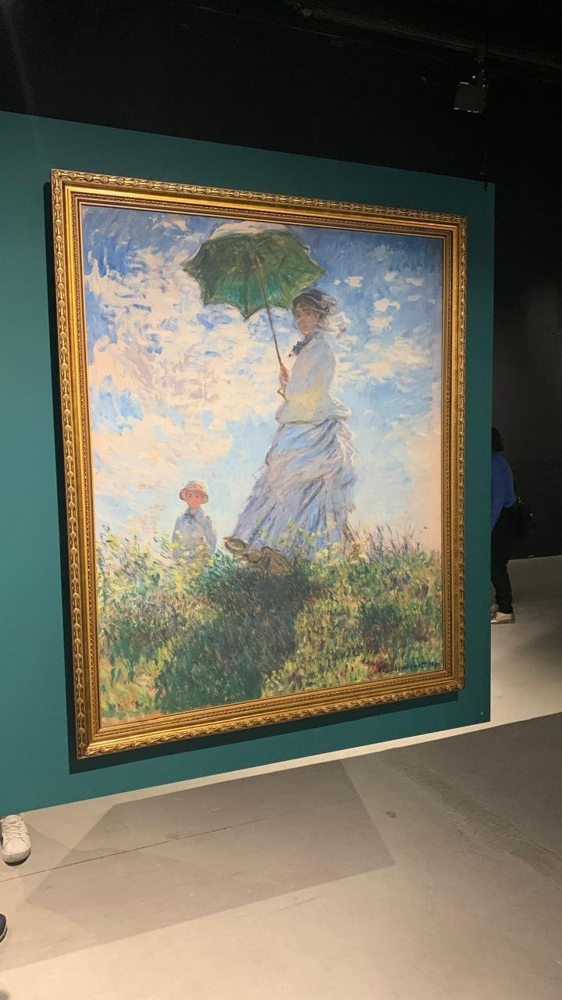
Visita à Exposição de Monet em Curitiba
Eu AMO as pinturas de Monet, Van Gogh e Michelangelo.
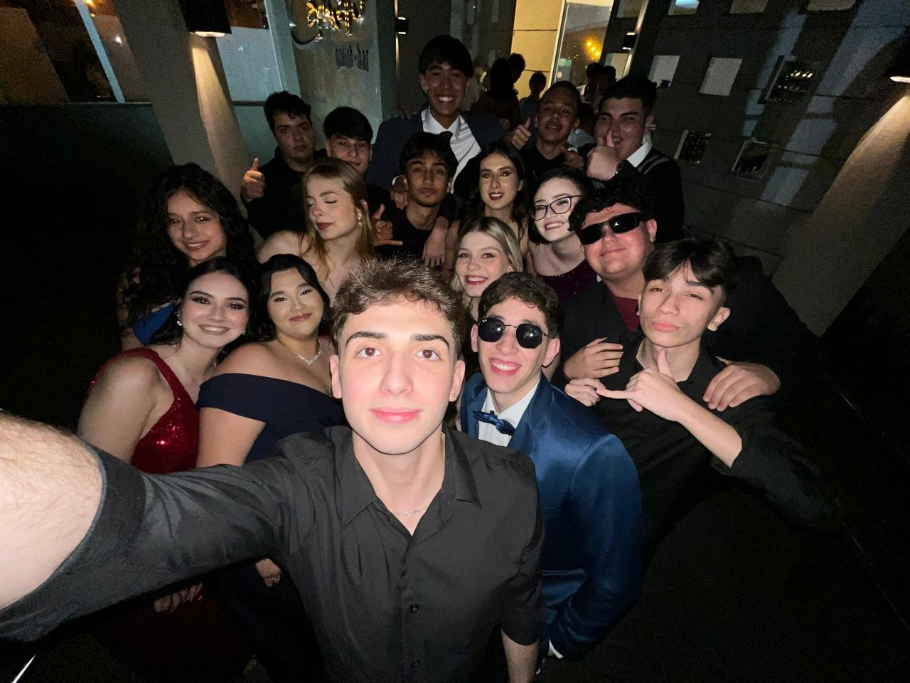
Jantar de Formatura do Ensino Médio
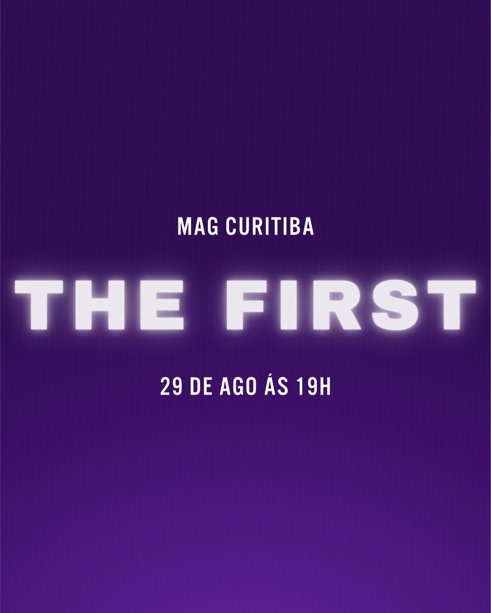
Mag The First
Arte que fiz para o primeiro culto de jovens da minha igreja.